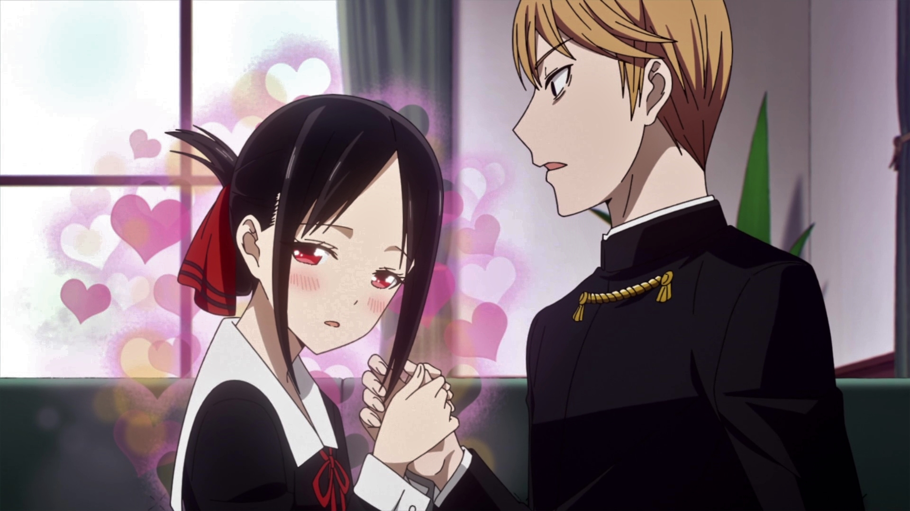
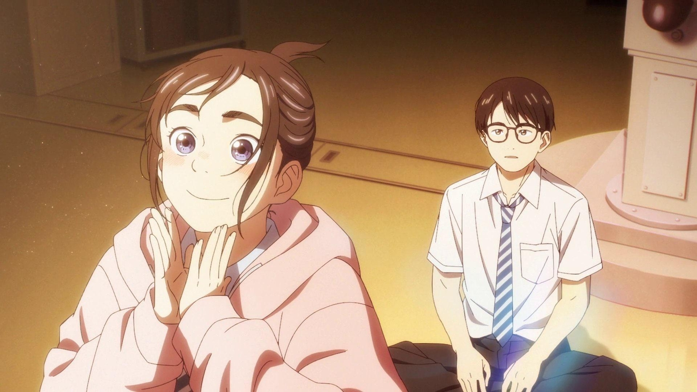
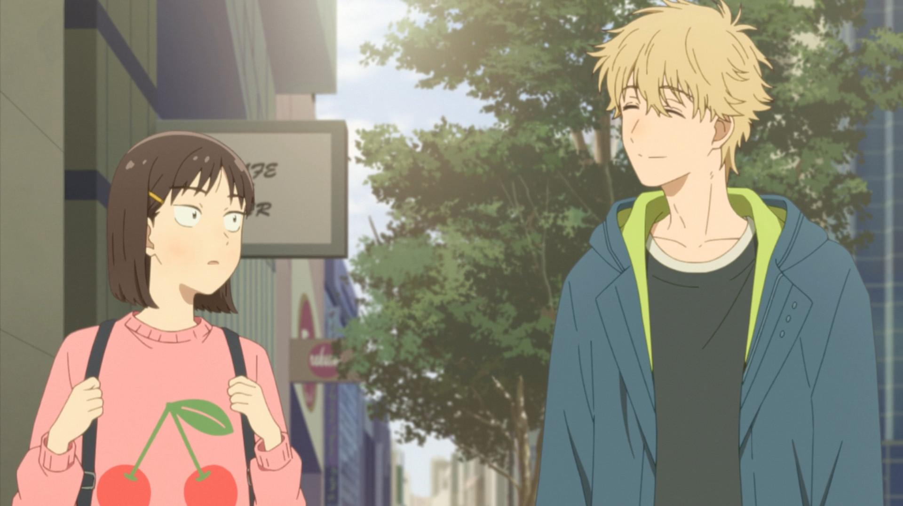
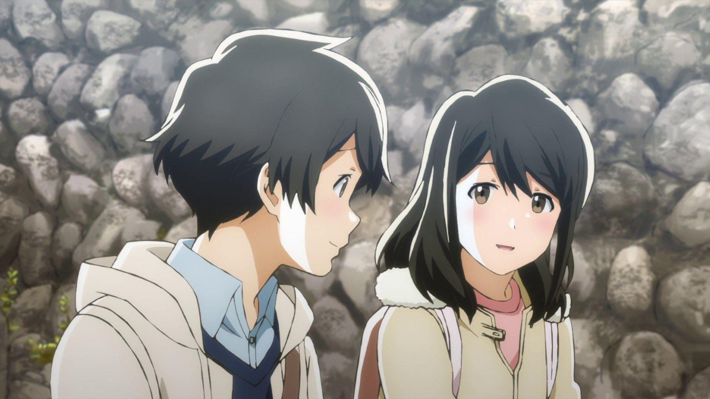
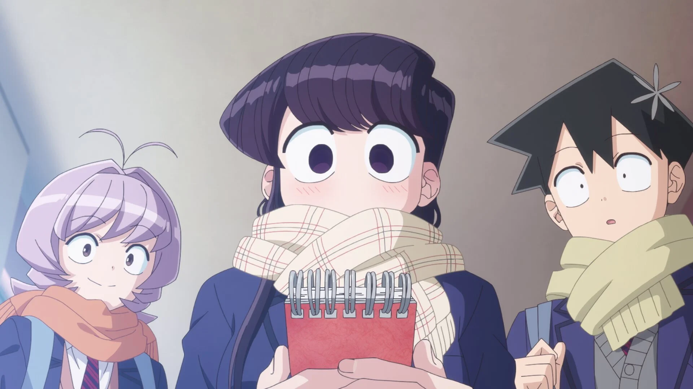
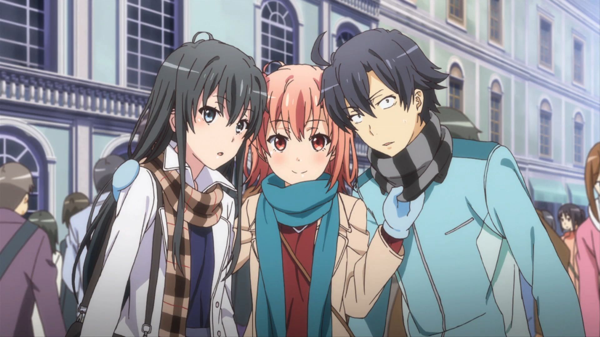
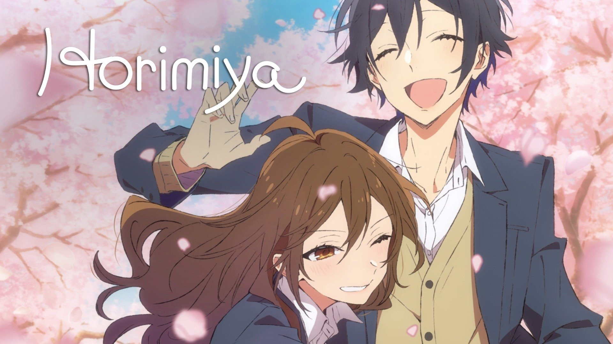
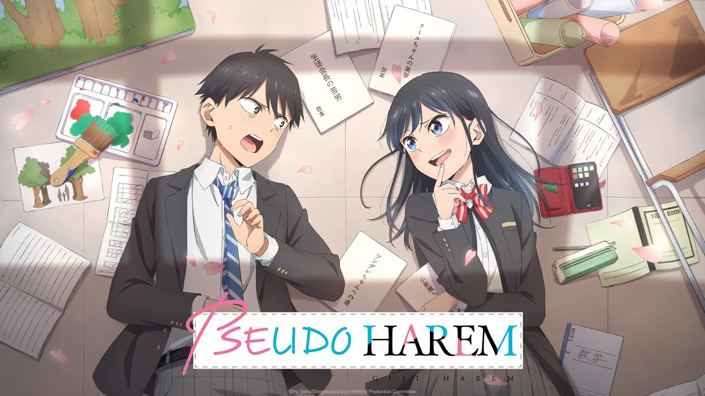
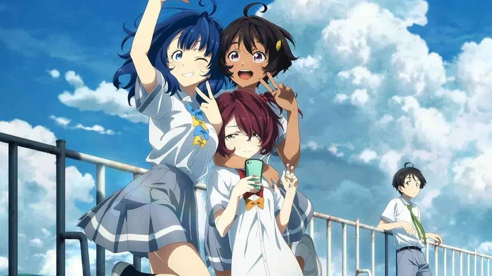
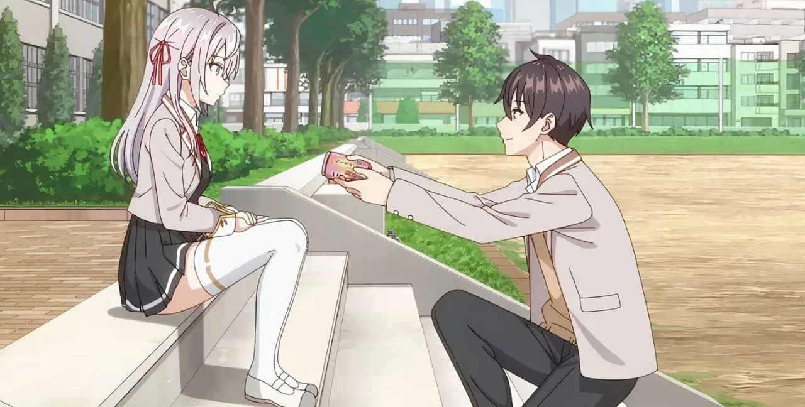

SMASH Senpai
Top 10 School Romance Anime That Will Make You Fall in Love Again
School romance anime have a special kind of magic. The quiet moments after class. Awkward conversations. Feelings that are hard to put into words.
These stories capture young love in its purest form — when emotions are intense, misunderstandings feel world-ending, and even a simple smile can mean everything.
From wholesome slice-of-life romances to emotionally deep character-driven stories, school romance anime remind us of what it felt like to fall in love for the first time.
Whether it’s two classmates slowly growing closer, unlikely friendships turning into love, or shy hearts learning how to open up, these anime deliver moments that stay with you long after the final episode.
These are the Top 10 Best School Romance Anime — emotional, relatable, and unforgettable stories that perfectly capture the beauty of young love.
Sponsored
#1 Kaguya-sama: Love Is War
Kaguya-sama: Love Is War takes the idea of school romance and turns it into a psychological battlefield. Set within an elite academy, the story follows Kaguya Shinomiya and Miyuki Shirogane — two brilliant students, both deeply in love, and both absolutely unwilling to confess first.
In their minds, love is a competition. Whoever confesses loses. This ridiculous yet genius premise transforms simple school interactions into dramatic mind games. A casual conversation becomes a calculated move. A shared glance turns into a full-blown strategy war.
What makes Kaguya-sama stand out isn’t just its comedy, but how well it understands emotional insecurity. Both leads are terrified of rejection. Their pride isn’t arrogance — it’s self-protection. Beneath the over-the-top humor lies a surprisingly relatable fear of being emotionally vulnerable.
As the series progresses, the romance grows deeper. Side characters add chaos, misunderstandings escalate, and the emotional stakes rise. The show never sacrifices character development for jokes — instead, it uses comedy to make the romance feel even more genuine.
Kaguya-sama proves that school romance anime can be smart, emotionally layered, and hilarious at the same time. It’s not just about falling in love — it’s about learning how to be honest with your feelings.
- Episode count: 37+ (multiple seasons)
- Genre: Comedy, Romance, Psychological
- Known for: Mind games, narration, elite comedy timing
- Core theme: Pride vs vulnerability

play anime smash or pass here (not sponsored)
SMASH SENPAI – Smash or Pass#2 Insomniacs After School
Insomniacs After School is a gentle, grounded school romance built around shared exhaustion and quiet companionship. Ganta Nakami and Isaki Magari are two students who suffer from insomnia, struggling to function in a world that never seems to slow down.
Their connection begins not with attraction, but with understanding. Late-night conversations, empty classrooms, and stolen moments of rest become the foundation of their bond. There’s no forced drama, no exaggerated misunderstandings — just two tired souls finding comfort in each other’s presence.
What makes this romance special is how natural it feels. Ganta is reserved and emotionally guarded, while Isaki is expressive but vulnerable. Their relationship grows through shared silence, gentle teasing, and the simple relief of not being alone anymore.
The anime captures the feeling of adolescence perfectly — the pressure, the loneliness, and the desire to be understood. Every interaction feels intimate, even when very little is being said.
Insomniacs After School isn’t about dramatic confessions. It’s about emotional presence. About staying awake together when the rest of the world is asleep. A soft, comforting romance that lingers long after the episode ends.
- Episode count: 13
- Genre: Romance, Slice of Life
- Known for: Quiet atmosphere, realistic pacing
- Core theme: Emotional comfort and companionship
Sponsored
#3 Skip and Loafer
Skip and Loafer is a refreshingly wholesome school romance that focuses on awkwardness, kindness, and emotional sincerity. Mitsumi Iwakura arrives in Tokyo full of ambition but lacking social awareness, while Sousuke Shima hides his emotions behind a calm, easygoing exterior.
Their relationship doesn’t follow typical romance tropes. There’s no instant attraction, no dramatic love triangle. Instead, feelings develop through misunderstandings, honest conversations, and small acts of consideration.
Mitsumi’s blunt honesty slowly breaks through Shima’s emotional distance. She doesn’t try to impress him — she simply stays true to herself. That authenticity becomes the heart of their connection.
What makes Skip and Loafer stand out is its emotional maturity. It understands that young love is often confusing, messy, and uncertain. The characters grow not just romantically, but personally, learning how to communicate and empathize.
This anime feels like a warm hug. It’s light, comforting, and deeply human. A perfect example of how school romance doesn’t need drama to be meaningful.
- Episode count: 12
- Genre: Romance, Slice of Life
- Known for: Wholesome tone, realistic characters
- Core theme: Emotional honesty and growth
#4 Tsuki ga Kirei
Tsuki ga Kirei is one of the most realistic and emotionally honest school romance anime ever made. It doesn’t rely on comedy, exaggerated drama, or flashy moments. Instead, it quietly captures what first love actually feels like.
Kotarou Azumi and Akane Mizuno are both introverted, awkward, and unsure of how to express their feelings. Their relationship develops slowly — through shy glances, hesitant messages, and long pauses filled with nervous silence. Nothing feels rushed, and nothing feels artificial.
What makes Tsuki ga Kirei special is how painfully relatable it is. The characters struggle to communicate, misunderstand each other, and fear rejection — not because of plot twists, but because they’re young and emotionally inexperienced.
Much of the romance unfolds through text messages, awkward encounters, and quiet moments after school. These small interactions carry enormous emotional weight, making every step forward feel earned.
Tsuki ga Kirei isn’t about dramatic love. It’s about gentle love. The kind that grows slowly, feels fragile, and stays with you long after the series ends.
- Episode count: 12
- Genre: Romance, Slice of Life
- Known for: Extremely realistic portrayal of first love
- Core theme: Quiet emotional connection
Sponsored
#5 Komi Can’t Communicate
Komi Can’t Communicate is a school romance built around social anxiety, kindness, and emotional patience. Shouko Komi is admired by everyone — beautiful, elegant, and seemingly perfect — yet she struggles with extreme communication anxiety.
Hitohito Tadano is the opposite of extraordinary. He’s average, observant, and incredibly empathetic. When he realizes Komi’s struggle, he doesn’t judge her or try to fix her. He simply listens.
Their relationship grows through trust. Tadano becomes Komi’s emotional anchor, helping her take small steps toward opening up. The romance doesn’t rush — it develops alongside Komi’s personal growth, making every moment feel sincere.
While the series includes exaggerated comedy and eccentric side characters, the core romance remains gentle and respectful. Tadano never pushes Komi beyond her limits, and Komi’s feelings are expressed through actions, not words.
Komi Can’t Communicate is a comforting reminder that love doesn’t require perfection. Sometimes, it’s simply about being patient with someone who’s trying their best.
- Episode count: 24+
- Genre: Romance, Comedy, Slice of Life
- Known for: Social anxiety representation
- Core theme: Kindness and emotional support
#6 Oregairu
Oregairu is not a typical school romance. It’s introspective, emotionally complex, and often uncomfortable — in the best possible way. Hachiman Hikigaya is a cynical, socially isolated boy who believes genuine relationships are a lie.
When he joins the Service Club, he meets Yukino Yukinoshita and Yui Yuigahama — two girls with their own emotional wounds. Together, they form a relationship built on misunderstandings, unspoken feelings, and emotional self-deception.
The romance in Oregairu is slow and deeply psychological. Characters hide behind sarcasm, politeness, and emotional walls. Conflicts arise not from jealousy, but from fear of honesty and fear of losing connection.
What makes Oregairu powerful is its refusal to simplify emotions. Love is messy. People hurt each other unintentionally. Growth comes from painful self-awareness, not convenient resolutions.
Oregairu is a school romance for viewers who want depth. It’s about learning what it means to form genuine relationships — even when that truth hurts.
- Episode count: 38 (3 seasons)
- Genre: Romance, Drama, Psychological
- Known for: Heavy dialogue and emotional realism
- Core theme: Authenticity vs self-protection
Sponsored
#7 Horimiya
Horimiya is a school romance that feels refreshingly real. Instead of dragging out misunderstandings for drama, it focuses on what actually happens after two people start dating. Kyouko Hori is popular, energetic, and well-liked at school, while Izumi Miyamura is quiet, withdrawn, and misunderstood.
Their connection begins by accident, when they discover each other’s hidden sides outside school. Hori isn’t as perfect as she appears, and Miyamura isn’t just a gloomy loner. This mutual vulnerability forms the foundation of a deeply genuine relationship.
What sets Horimiya apart is how quickly it allows the couple to grow closer. Confessions happen early, and the story shifts its focus from “will they date” to “how do they navigate love together.” Arguments, jealousy, and insecurity are handled with emotional maturity.
The series excels at portraying everyday romance — hanging out after school, meeting friends, and dealing with personal baggage. Nothing feels exaggerated, and every interaction feels earned.
Horimiya is perfect for viewers who want a school romance that treats relationships seriously, showing both the comfort and the challenges of being in love.
- Episode count: 13 + specials
- Genre: Romance, Slice of Life
- Known for: Realistic dating progression
- Core theme: Acceptance and emotional honesty
#8 Pseudo Harem
Pseudo Harem is a lighthearted school romance built around playful teasing and emotional intimacy. Eiji Kitahama dreams of having a harem, but instead of multiple girls, he ends up spending all his time with one — Rin Nanakura.
Rin is a talented actress who enjoys role-playing different personalities. To entertain Eiji, she pretends to be various “girlfriend types” — tsundere, shy, dominant, and more. What starts as a joke slowly becomes something genuine.
Beneath the comedy, Pseudo Harem is surprisingly sweet. Eiji never treats Rin as an object, and Rin’s affection grows naturally as they spend time together. Their chemistry comes from comfort, trust, and shared fun.
The romance develops through everyday interactions — school festivals, casual conversations, and moments of quiet understanding. There’s no forced drama, only gradual emotional realization.
Pseudo Harem is ideal for viewers who want a school romance that feels warm, playful, and emotionally satisfying without unnecessary conflict.
- Episode count: 12
- Genre: Romance, Comedy, Slice of Life
- Known for: Teasing-based romance
- Core theme: Playfulness turning into real love
#9 Makeine: Too Many Losing Heroines!
Makeine: Too Many Losing Heroines! offers a refreshing twist on school romance. Instead of focusing on the winners, it centers on girls who lose in love — the ones who are rejected, overlooked, or left behind.
Kazuhiko Nukumizu is a quiet, observant boy who unintentionally becomes involved in the emotional fallout of multiple heartbreaks. Rather than romanticizing rejection, the anime treats it with honesty and empathy.
Each heroine represents a different kind of loss — unspoken feelings, late realizations, or choosing the wrong moment. The series doesn’t rush healing. Instead, it shows how pain lingers and how people slowly move forward.
What makes Makeine stand out is its emotional maturity. Love isn’t always rewarded. Not every story ends happily. And sometimes, growth comes from accepting loss.
This is a school romance for viewers who want something deeper — a story that acknowledges that heartbreak is just as important as falling in love.
- Episode count: 12
- Genre: Romance, Drama, Slice of Life
- Known for: Focus on rejected heroines
- Core theme: Healing after heartbreak
#10 Alya Sometimes Hides Her Feelings in Russian
Alya Sometimes Hides Her Feelings in Russian is a charming school romance built around miscommunication, teasing, and unspoken affection. Alisa “Alya” Mikhailovna Kujou is a beautiful, intelligent transfer student who often mutters her true feelings in Russian.
What she doesn’t realize is that Masachika Kuze, the boy sitting next to her, understands every word. This creates a unique dynamic where Alya unknowingly reveals her vulnerability while Masachika quietly treasures it.
The romance thrives on subtlety. Alya’s tsundere behavior contrasts with her honest Russian remarks, creating moments that are both funny and heartfelt. Masachika’s restraint adds emotional tension without forcing drama.
Beneath the comedy, the series explores insecurity, cultural identity, and fear of expressing emotions openly. The slow-burn romance feels natural, driven by everyday school interactions.
Alya Sometimes Hides Her Feelings in Russian is perfect for viewers who enjoy gentle teasing, emotional restraint, and a romance that unfolds quietly through small moments.
- Episode count: 12
- Genre: Romance, Comedy, School
- Known for: Russian language twist
- Core theme: Unspoken affection
Play Smash or Pass on SMASH Senpai.
 PLAY SMASH OR PASS
PLAY SMASH OR PASS